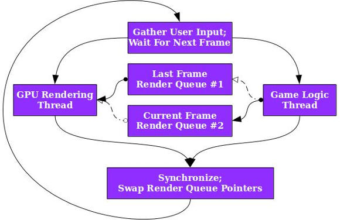

Off-thread rendering
Created: 10.9.2015Here's what we have to work with:
- You can only call graphics APIs from a single, dedicated thread. It applies everywhere: DirectX, OpenGL, HTML5's canvas.
- Calling "End, go ahead and render" is a non-busy blocking call that waits for the GPU, so the core can do whatever it wants in the meantime.
- Starting a thread takes more time than rendering a frame - 30-200ms as opposed to a single frame - 15ms @ 60FPS.
With that in mind there is one simple trick we can use to speed up your game right now - render on a dedicated thread.
Ingredients
-
A persistent thread (launch on startup, kill on exit). On-demand
std::asyncdoesn't cut it because of the startup time, which is a shame - promises would be very useful here. - Render instruction data structure - for 2D it could be a struct with a bitmap reference, position, rotation and so on. But generally, we want to replicate and serialize the graphics API calls.
- 2 vectors of rendering instructions.
- A single mutex.
The flow
We process the game logic off-thread. We don't directly call the rendering API, instead fill the vector up with rendering instructions. When the game logic finishes, guarding with a mutex, we swap vectors. The main thread only renders and waits for swaps.
Advantages
- Halving frame times even in tangled, monolithic single-threaded games.
- Separation of game and graphics API code.
- Testability - because we don't have to mock, we can inspect what gets rendered.
- Establishing a base for rendering from more than just one thread. Now we can "render" from multiple off-threads and collect the results.